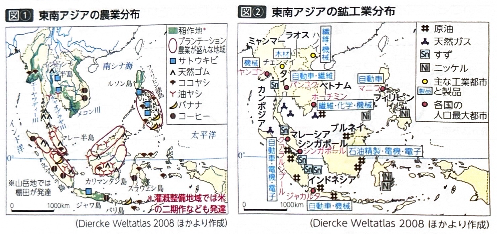
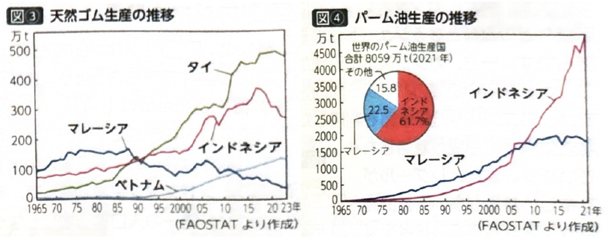
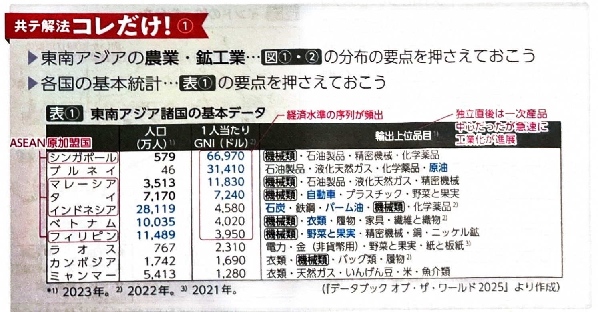
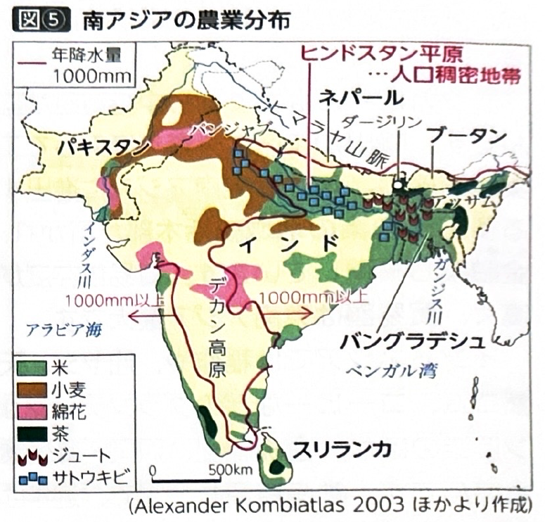
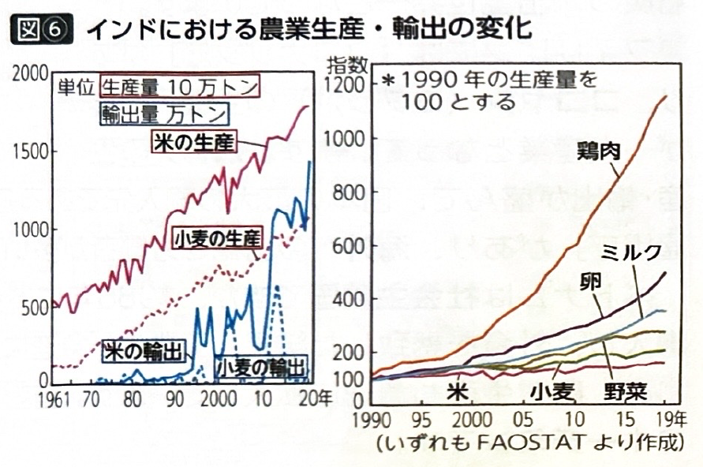
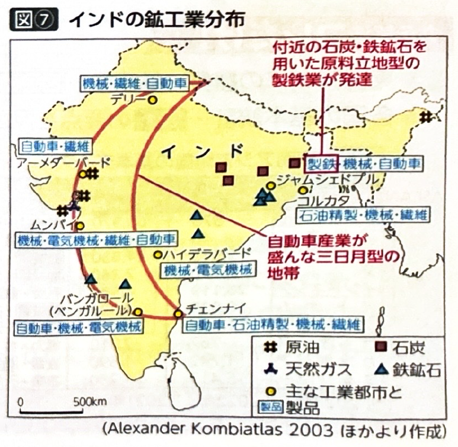
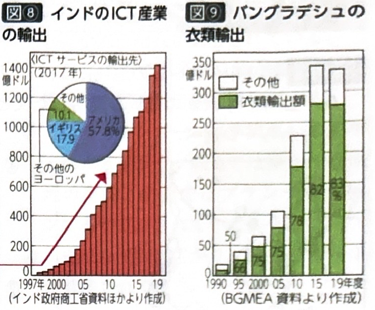

第2章 東南・南アジア - 産業
ポイント総復習
1. 東南アジアの農業と鉱工業
東南アジアでは伝統的な農業の近代化と、外資導入による工業化が進んでいます。
- 農業：伝統的な雨季の稲作や浮稲のほか、灌漑の普及により二期作や三期作も行われています。また、油ヤシや天然ゴム、コーヒーなどのプランテーション農業も盛んです。
- 鉱工業：原油や石炭などの鉱産資源が豊富です。20世紀後半以降は輸出加工区を設置して外国資本を受け入れ、輸出指向型の工業化が進展しました。

2. 東南アジア各国の特徴
各国の主要な産業とキーワードを結びつけて覚えましょう。
| 国名 | 産業の特徴とキーワード |
|---|---|
| タイ | チャオプラヤ川流域で稲作が盛ん（米輸出上位）。天然ゴム生産世界一。日系企業が多く進出し、東南アジア最大の自動車生産国。首都バンコクへの一極集中（プライメートシティ）が進行。 |
| マレーシア | 天然ゴムから油ヤシ（パーム油）への転換が進む。日本や韓国を模範とする「ルックイースト政策」で電気・電子工業が発達。 |
| シンガポール | 古くから中継貿易が盛ん。多国籍企業の地域統括本部や金融業が集積し、貿易依存度が高い。 |
| インドネシア | プランテーション農業や稲作のほか、鉱産資源が豊富で近年は石炭の輸出量が世界一。 |
| フィリピン | ココヤシ（コプラ油）やバナナの生産・輸出が盛ん。海外への出稼ぎ労働者が多いことも特徴。 |
| ベトナム | 社会主義国だが、1986年の「ドイモイ（刷新）政策」で市場経済を導入し工業化が進行。米やコーヒーの生産も急速に拡大。 |


3. 南アジアの農業
南アジアの農業は、年降水量1,000mmのラインを境に稲作と畑作に分かれます。
- 稲作：ガンジス川中・下流域のヒンドスタン平原（人口稠密地帯）などで盛んです。ガンジスデルタでは麻袋の原料となるジュート栽培も行われます。
- 畑作（小麦）：ガンジス川上流域からインダス川中流域のパンジャブ地方において、外来河川や地下水路による灌漑を利用して栽培されます。
- 綿花と茶：デカン高原の黒色土壌（レグール）やインダス川流域で綿花が栽培されます。茶はヒマラヤ山麓のアッサム地方やスリランカで盛んです。
- インドの「革命」：20世紀後半以降、高収量品種の導入による穀物増産（緑の革命）、生乳の増産（白い革命）、鶏肉の増産（ピンクの革命）が進みました。


4. 南アジア各国の鉱工業
各国で急速な工業化が進んでいますが、得意とする分野が異なります。
| 国名 | 産業の特徴とキーワード |
|---|---|
| インド | ムンバイやデリーで自動車工業が発達。石炭・鉄鉱石の産地に近いジャムシェドプルで製鉄業が発達。1991年の経済自由化以降、南部ベンガルール（バンガロール）などでICT産業（ソフトウェア）が集積し、輸出が急増しています。 |
| バングラデシュ | 国土の大半がガンジスデルタの低平な地形で、洪水や高潮の被害を受けやすいです。安価な労働力を背景に外国企業からの委託を受け、輸出額の大半を衣類・繊維品が占めています。 |


基礎問題（理解度チェック）
Q1. 東南アジア各国の産業と政策について、空欄を埋めなさい。
マレーシアは、日本や韓国を模範とする「
」を掲げて電気・電子工業が発達した。また、農業面では天然ゴムから
への転換が進んでいる。一方、タイは日系企業が多く進出し、東南アジア最大の
生産国となっているほか、天然ゴムの生産量も世界トップクラスである。
Q2. ベトナムとシンガポールの産業について、空欄を埋めなさい。
社会主義国であるベトナムは、1986年に市場経済を導入する「
」を採用し、工業化や農業生産の拡大が進んでいる。一方、都市国家であるシンガポールは古くから
が盛んであり、多国籍企業の地域統括本部や金融業が集積しているため、貿易依存度が非常に
。
Q3. 南アジアの農業について、空欄を埋めなさい。
南アジアの農業は年降水量1,000mmのラインで分かれ、多雨地域では
が盛んである。特にガンジスデルタでは麻袋の原料となる
の栽培も行われる。一方、少雨地域であるパンジャブ地方では外来河川などを利用した灌漑により
が栽培され、デカン高原に分布する黒色土壌の
では綿花の栽培が盛んである。
Q4. インドの南部にある都市ベンガルール（バンガロール）は、アメリカとの時差や、英語を話せる人材の多さを活かして、ソフトウェアなどのICT産業が急速に集積し発展している。
Q5. バングラデシュは国土の大半が標高の高い高原地帯であるため、水害のリスクは低い。また、輸出の中心は自動車や機械類などの重工業製品である。